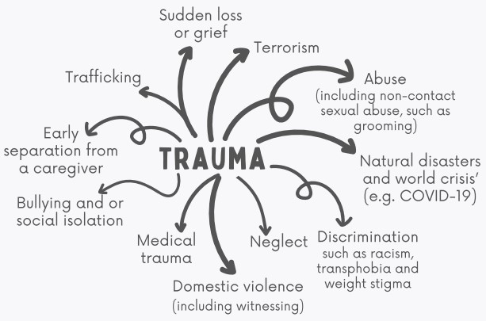

First Step : Eating Disorders
We are here to help.

We are here to help.
When it comes to encouraging people to seek assistance and support as soon as possible, having a basic understanding of eating disorders is crucial. If you're concerned about your own or a loved one's mental health. The first step is to speak with them and encourage them to get medical attention from their primary care physician.
In the United Kingdom, an estimated 1.25 million people suffer from an eating disorder.
Eating disorders are a type of mental illness that can afflict anyone of any age, gender, ethnicity, or background.
An eating disorder has no one cause, and symptoms vary depending on the person and the type of eating disorder.
Disordered eating is frequently used by people with eating disorders to cope with tough conditions and/or feelings.
Consuming disorders can manifest themselves in a variety of ways, including reducing the amount of food consumed, binging or eating enormous amounts of food at once, and avoiding food consumption through unsafe means.
Making oneself vomit, abusing laxatives, starving, exercising excessively or a combination of these behaviours.
Anorexia, ARFID, Binge eating disorder bulimia, OSFED
To get more further detail, please go to our contact page, and it will send you to one of our contact team.
